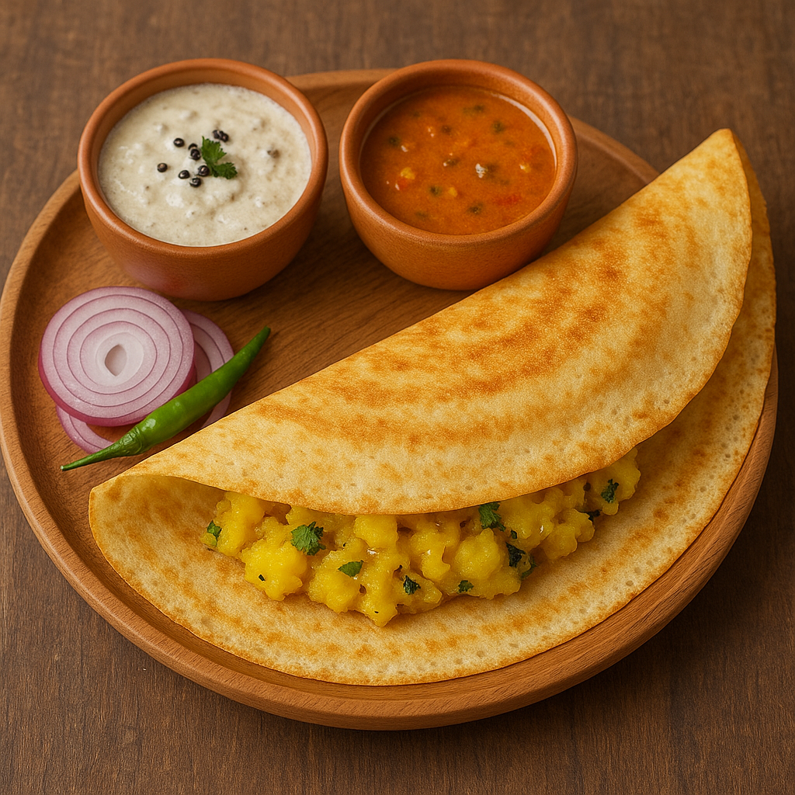

Masala Dosa

Description
Masala Dosa is a South Indian classic that brings together the simplicity of fermented rice-lentil crepes and the spiced richness of a potato filling. The dosa itself is paper-thin and crispy, made from a naturally fermented batter that gives it a slightly tangy flavor. Inside, it’s filled with a delicious mixture of mashed potatoes sautéed with onions, mustard seeds, green chilies, and turmeric. This blend creates a perfect balance of crunch and creaminess in every bite.
Often served with coconut chutney and sambar, Masala Dosa is not just food—it’s a cultural experience. While it originated in Karnataka, this dish is now a breakfast staple throughout India and around the world. Its versatility, nutrition, and irresistible taste make it a go-to choice for anyone seeking a light yet fulfilling meal. The golden dosa wrapping the warm spiced filling is a comforting delight for all ages.
Ingredients
For Dosa Batter
- 1 cup parboiled rice
- 1/3 cup urad dal (split black gram)
- 2 tbsp poha (flattened rice)
- Salt to taste
- Water (for grinding)
For Masala Filling
- 3 medium potatoes (boiled and mashed)
- 1 onion (sliced)
- 1 green chili (chopped)
- 1/2 tsp mustard seeds
- 1/2 tsp turmeric powder
- 1/2 tsp chana dal
- 2 tbsp oil
- A few curry leaves
- 1/2 tsp urad dal
- Salt to taste
Cooking Instructions
Batter
- Soak rice, dal, and poha separately for 4-6 hours.
- Grind to a smooth batter. Mix all, add salt, and ferment overnight.
Masala
- Heat oil in a pan, add mustard seeds, chana dal, urad dal, and curry leaves.
- Add green chili and onions, sauté until soft.
- Add turmeric and mashed potatoes. Mix well and cook for 2-3 minutes. Set aside.
Dosa
- Heat a non-stick or cast-iron tawa. Pour batter and spread in a circular motion.
- Drizzle a little oil. When edges brown, place some masala in the center.
- Fold and serve hot with coconut chutney and sambar.
Home